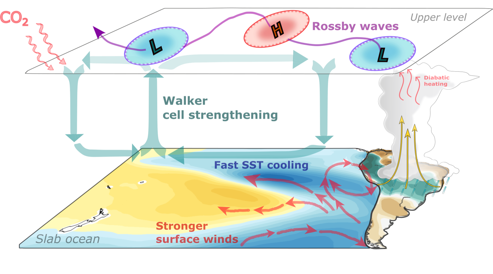
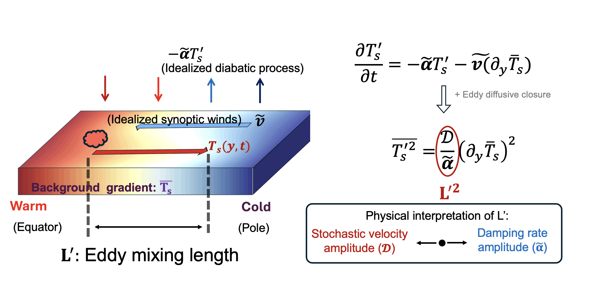
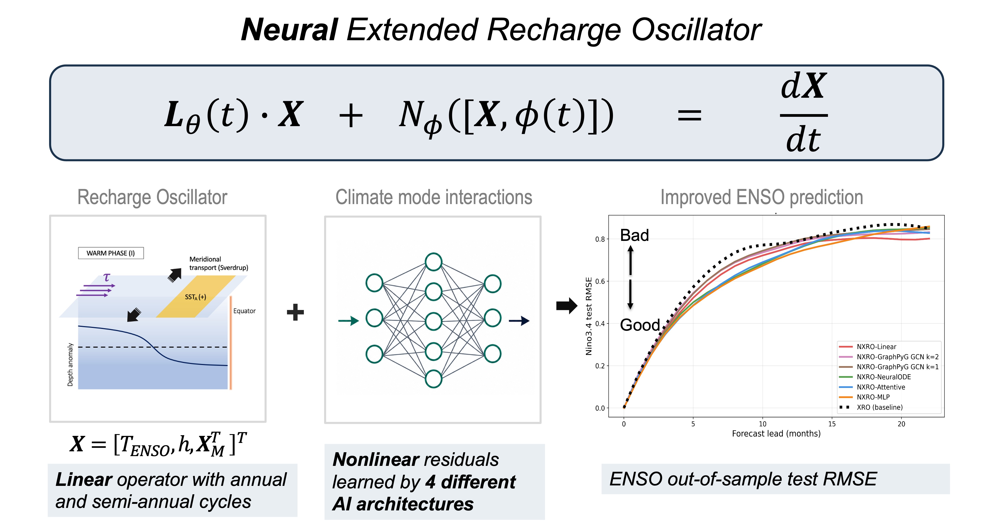

Research Themes

How land precipitation contributes to SST pattern formationA Tale of Precipitation and Sea Surface Temperature
Understanding the complex two-way interactions between precipitation and sea-surface temperature patterns, and how their coupling shapes large-scale atmospheric circulation and climate impacts around the world.
Explore research & publications →
A simple framework to understand temperature variancePhysical Scaling of Extratropical Climate Extremes
Deriving simple theoretical frameworks to understand how large-scale atmospheric circulation interacts with land, ocean, and the hydrological cycle to shape mid- to high-latitude climate extremes.
Explore research & publications → Mechanisms of Walker circulation changes to increasing CO2
Mechanisms of Walker circulation changes to increasing CO2
Tropical Climate Dynamics Across Scales
Studying tropical climate change and variability, with a focus on tropical air-sea interactions and their remote Earth-system impacts.
Explore research & publications →
Physics-Informed AI for Climate Dynamics and Prediction
Combining simple, physically interpretable partial differential equations with AI tools to understand and predict complex climate dynamics.
Explore research & publications →